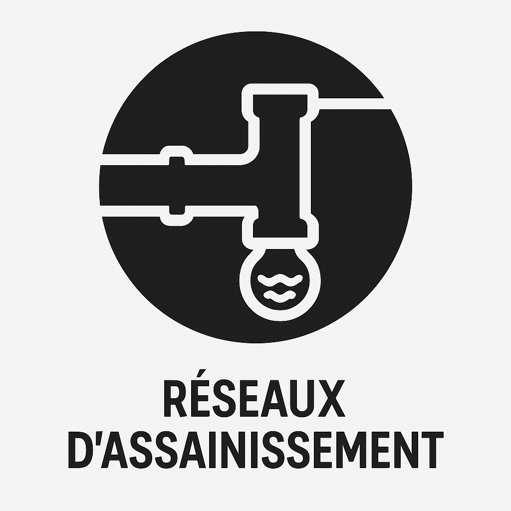
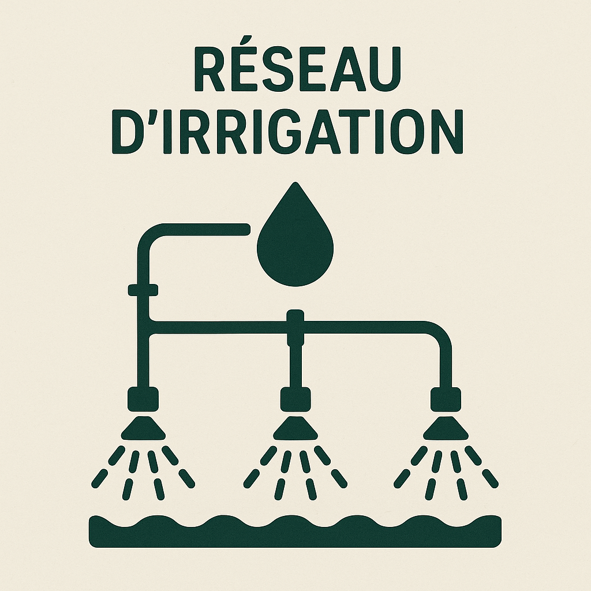
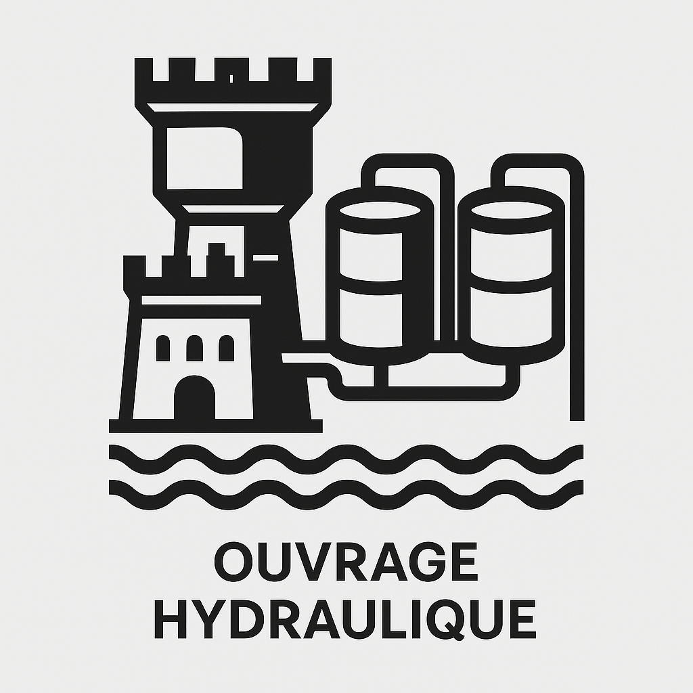

- Analyse approfondie des besoins et des contraintes spécifiques du projet.
- Conception de solutions hydrauliques sur mesure, en utilisant des logiciels spécialisés.
- Concrétiser avec l’établissement d’un plan de recollement des travaux réalisés.

- Conception et réalisation de réseaux d'adduction d'eau potable.
- Études de captage, de traitement et de distribution de l'eau.
- Installation de canalisations, de réservoirs et de pompes.

- Conception et réalisation de réseaux d'assainissement.
- Études de collecte, de traitement et de rejet des eaux usées.
- Installation de canalisations, de stations de pompage et de stations d'épuration.

- Conception et réalisation de réseaux d'irrigation pour l'agriculture et les espaces verts.

- Réalisation de barrages, châteaux et des réservoirs.
- Réalisation de stations de pompage et de régulation hydraulique.
- Conception et Réalisation du mur en soutènement contre les inondations.